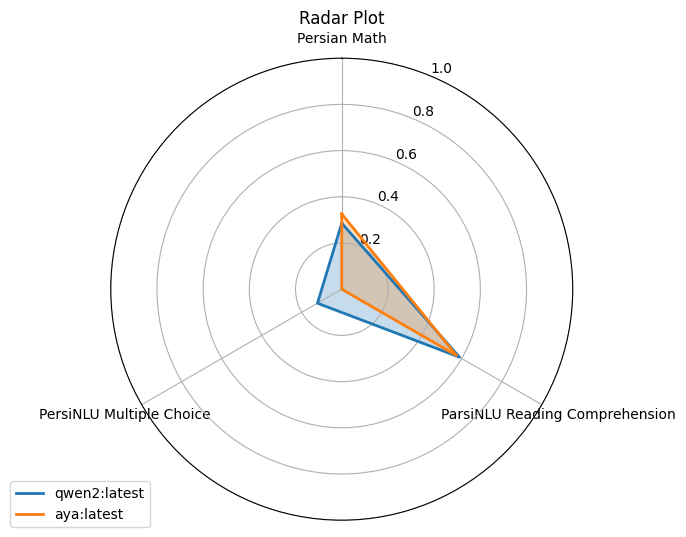

Benchmarks
A benchmark evaluates multiple models on multiple tasks and compares their
scores. It is a loop over task.evaluate(model) plus a result object that
knows how to rank, pivot, plot, merge, and save.
Custom benchmark
CustomBenchmark takes your models and tasks. Interfaces mix freely; here a
local transformers checkpoint runs against an API model:
from transformers import AutoModelForCausalLM, AutoTokenizer
from parsbench.benchmarks import CustomBenchmark
from parsbench.models import OpenAIModel, PreTrainedTransformerModel
from parsbench.tasks import ParsiNLUMultipleChoice, PersianMath, ParsiNLUReadingComprehension
# Create models
model = AutoModelForCausalLM.from_pretrained(
"Qwen/Qwen2-72B-Instruct",
torch_dtype="auto",
device_map="auto"
)
tokenizer = AutoTokenizer.from_pretrained("Qwen/Qwen2-72B-Instruct")
qwen2_model = PreTrainedTransformerModel(model=model, tokenizer=tokenizer)
aya_model = OpenAIModel(
api_base_url="http://localhost:11434/v1/",
api_secret_key="ollama",
model="aya:latest",
)
# Run the benchmark
benchmark = CustomBenchmark(
models=[qwen2_model, aya_model],
tasks=[
ParsiNLUMultipleChoice,
ParsiNLUReadingComprehension,
PersianMath,
],
)
result = benchmark.run(
prompt_lang="fa",
prompt_shots=[0, 3],
n_first=100,
sort_by_score=True,
)
run() accepts the same evaluation parameters as task.evaluate()
(n_first, skip_existing_matches, prefer_concurrency, n_workers, the
save flags), plus sort_by_score= to rank models by average score in the
result.
There is also ParsiNLUBenchmark, a CustomBenchmark subclass hard-wired
to the ParsiNLU task set.
Full benchmark
To benchmark on every task in the framework, use load_all_tasks:
from parsbench.benchmarks import CustomBenchmark
from parsbench.models import OpenAIModel
from parsbench.tasks.utils import load_all_tasks
aya_model = OpenAIModel(
api_base_url="http://localhost:11434/v1/",
api_secret_key="ollama",
model="aya:latest",
)
benchmark = CustomBenchmark(
models=[aya_model],
tasks=load_all_tasks(),
)
result = benchmark.run(
prompt_lang="fa",
prompt_shots=[0, 3],
n_first=100,
sort_by_score=True,
)
Benchmark result
BenchmarkResult holds every evaluation result for every model. Convert it
to a pandas DataFrame with to_pandas(); to_pandas(pivot=True) gives the
models-as-columns pivot table:
print(result.to_pandas(pivot=True))
Output:
score
model_name qwen2:latest
n_shots 0 3
task_category task_name sub_task score_name
classic ParsiNLU Reading Comprehension NaN Common Tokens 0.46231 0.588274
knowledge ParsiNLU Multiple Choice common_knowledge Exact Match 0.30000 0.000000
literature Exact Match 0.20000 0.428571
math_and_logic Exact Match 0.60000 0.285714
math Persian Math NaN Math Equivalence 0.00000 0.142857
It renders best in a Jupyter notebook.
Plots
show_radar_plot() compares models across task categories;
show_bar_plot() shows the same data as bars:
result.show_radar_plot()
result.show_bar_plot()

Saving results
Set save_matches, save_evaluation, and save_benchmark to write matches,
per-task evaluations, and the combined benchmark file during the run:
benchmark = CustomBenchmark(
models=[aya_model, qwen2_model],
tasks=[PersianMath, FarsTailEntailment],
)
result = benchmark.run(
prompt_lang="fa",
prompt_shots=[0, 5],
n_first=100,
save_matches=True,
save_evaluation=True,
save_benchmark=True,
output_path="results",
sort_by_score=True,
)
The output directory structure:
results
├── aya:latest
│ ├── FarsTail_Entailment
│ │ ├── evaluation.jsonl
│ │ ├── matches_0_shot.jsonl
│ │ └── matches_5_shot.jsonl
│ └── Persian_Math
│ ├── evaluation.jsonl
│ ├── matches_0_shot.jsonl
│ └── matches_5_shot.jsonl
├── qwen2:latest
│ ├── FarsTail_Entailment
│ │ ├── evaluation.jsonl
│ │ ├── matches_0_shot.jsonl
│ │ └── matches_5_shot.jsonl
│ └── Persian_Math
│ ├── evaluation.jsonl
│ ├── matches_0_shot.jsonl
│ └── matches_5_shot.jsonl
└── benchmark.jsonl
Rebuilding and merging results
Three helpers cover the "I ran benchmarks last week and want to work with them now" cases:
from parsbench.benchmarks import BenchmarkResult, merge_benchmark_results
# rebuild a result from saved matches files (rescore=True re-runs the scorers)
result = BenchmarkResult.from_matches_files("results/", rescore=False)
# combine runs done at different times / on different machines
merged = merge_benchmark_results([result_a, result_b], sort=True)
merge_benchmark_results drops duplicate model names by default; pass
keep_duplicates=True to keep them all.
Building a leaderboard
build_leaderboard_from_benchmark writes the request/result file layout
used by the
ParsBench Leaderboard
HuggingFace space:
from parsbench.benchmarks import build_leaderboard_from_benchmark
build_leaderboard_from_benchmark(result, "leaderboard_data/")